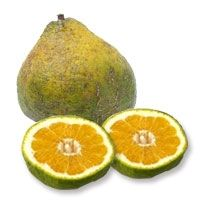

Ugli fruit

| Index |
|---|
| Short description |
| Nutritional value |
| Health benefits |
| Best time to eat |
| Who shoud avoid |
| Fun fact |
Short Description
Ugli fruit is a Jamaican citrus fruit and a natural hybrid of orange, grapefruit, and tangerine. Despite its rough and wrinkled outer skin, the inside is juicy, sweet, and mildly tangy. It is commonly eaten fresh or used in juices.
Nutritional Value
| Nutrient | Amount |
|---|---|
| Calories | 47 kcal |
| Carbohydrates | 11 g |
| Dietary Fiber | 2 g |
| Vitamin C | 70% |
| Potassium | 140 mg |
| Antioxidants | Present |
Health Benefits
- Boosts immunity powerfully
- Improves digestion
- Supports heart health
- Helps reduce inflammation
- Improves skin texture
Best Time to Eat
Ugli fruit is best eaten:
- Morning hours
- As a midday refreshment
Avoid eating:
- Late at night
- On empty stomach if acidity exists
Who Should Avoid
- People with acid reflux or ulcers
- Those allergic to citrus fruits
- People with sensitive teeth, due to acidity
Fun Fact
- Ugli fruit gets its name from its ugly appearance
- It tastes sweeter than grapefruit
- It is mostly grown in Jamaica